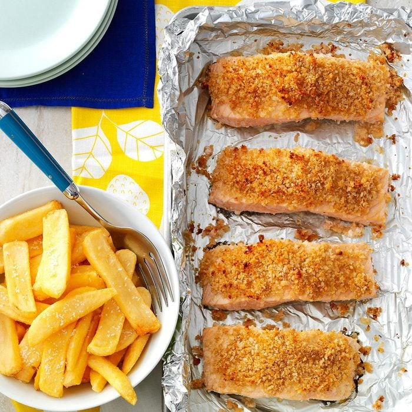

Crispy fish & chips

Description
A British pub classic turns crown jewel when you add horseradish, panko and Worcestershire. You can also try it with a white fish like cod or haddock.
Ingredients
- 4 cups of frozen steak fries
- 4 salmon fillets (6 ounces each)
- 1 to 2 tablespoons prepared horseradish
- 1 tablespoon grated Parmesan cheese
- 1 tablespoon Worcestershire sauce
- 1 teaspoon Dijon mustard
- 1/4 teaspoon salt
- 1/2 cup panko bread crumbs
- Cooking spray
Directions
- Preheat oven to 450°. Arrange steak fries in a single layer on a baking sheet. Bake on lowest oven rack 18-20 minutes or until light golden brown.
- Meanwhile, place salmon on a foil-lined baking sheet coated with cooking spray. In a small bowl, mix horseradish, cheese, Worcestershire sauce, mustard and salt; stir in panko. Press mixture onto fillets. Spritz tops with cooking spray.
- Bake salmon on middle oven rack 8-10 minutes or until fish just begins to flake easily with a fork. Serve with fries.